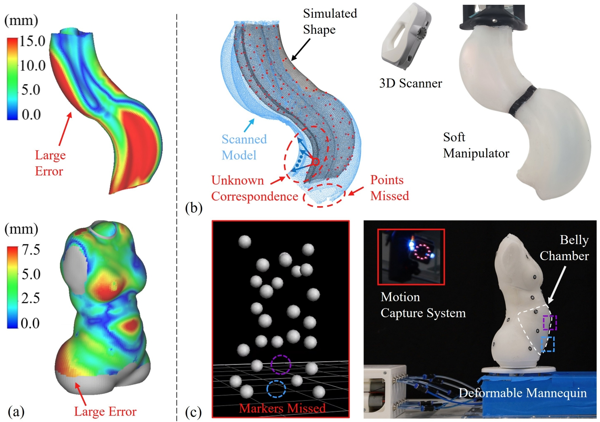
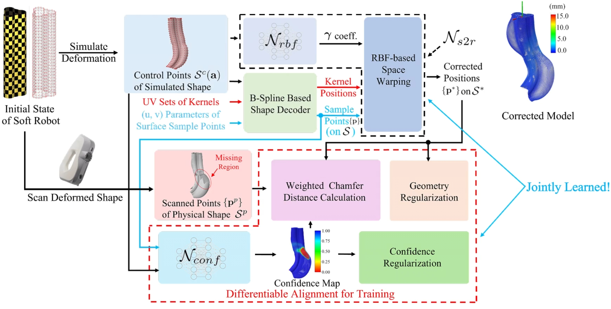

Deformable Cruved Actuator Fabrication
Using curved actuator with hyper-elastic material, the deformation can be continuous with local curvature variation.
This paper presents a correspondence-free, function-based sim-to-real learning method for controlling deformable freeform surfaces. Unlike traditional sim-to-real transfer methods that strongly rely on marker points with full correspondences, our approach simultaneously learns a deformation function space and a confidence map -- both parameterized by a neural network -- to map simulated shapes to their real-world counterparts.
As a result, the sim-to-real learning can be conducted by input from either a 3D scanner as point clouds (without correspondences) or a motion capture system as marker points (tolerating missed markers). The resultant sim-to-real transfer can be seamlessly integrated into a neural network-based computational pipeline for inverse kinematics and shape control.
We demonstrate the versatility and adaptability of our method on two vision devices and across four pneumatically actuated soft robots: a deformable membrane, a robotic mannequin, and two soft manipulators.


Using curved actuator with hyper-elastic material, the deformation can be continuous with local curvature variation.
Using curved molds you can create deformable free-form surfaces with hyper-elastic material.
@article{tian2025correspondence,
title={Correspondence-Free, Function-Based Sim-to-Real Learning for Deformable Surface Control},
author={Tian, Yingjun and Fang, Guoxin and Su, Renbo and Lyu, Aoran and Dutta, Neelotpal and Gill, Simeon and Weightman, Andrew and Wang, Charlie CL},
journal={arXiv preprint arXiv:2509.00060},
year={2025}
}